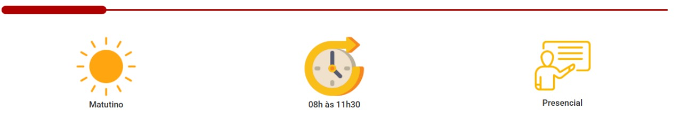

Desenvolvimento de Software Multiplataforma

Coordenador: Prof. Me. Edson Company Colalto Junior E-Mail: f111coord.dsm@cps.sp.gov.br
Entre as diversas disciplinas do curso estão matemática para computação, álgebra linear, redação técnica e ética profissional e patente, metodologias ágeis para gestão de projetos de software e inglês. O currículo inclui ainda conhecimentos mais específicos da área, como lógica de programação e algoritmo, programação para desktop, dispositivos móveis e para web. Experiência do usuário, computação em nuvem, inteligência artificial, segurança da informação, internet das coisas, banco de dados e engenharia de software também integram o programa do curso. O tecnólogo em Desenvolvimento de Software Multiplataforma realiza a coleta e análise estatística de dados para apoiar clientes nas tomadas de decisão. Outra atribuição da área é a coordenação de projetos e equipes de desenvolvimento de software. O profissional pode projetar, desenvolver e testar softwares para múltiplas plataformas, aplicações em nuvem e internet das coisas. Entre outras habilidades, cabe ao especialista a apresentação de soluções tecnológicas a partir de conceitos, métodos e tecnologias de linguagens de programação, banco de dados, engenharia de software, segurança da informação e inteligência artificial.